from sikuli import* import TABFunction def slip_list(): #-----This script tests slip list-----# type("m", KeyModifier.CTRL) wait(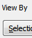, 60) type('s', KeyModifier.ALT) wait(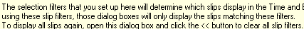, 60) type(Key.TAB + 'c' + Key.TAB + Key.SPACE) wait(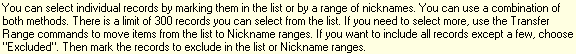, 60) type('sikuli test client 1') wait(1) type(Key.F4) type(Key.ENTER) waitVanish() type(Key.ENTER) waitVanish() assert exists(Pattern(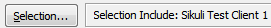).similar(0.93)) type(Key.TAB + Key.ENTER) waitVanish(Pattern(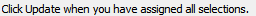).similar(0.96)) assert exists(Pattern(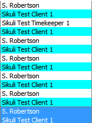).similar(0.94)) assert exists(Pattern(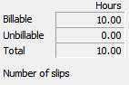).similar(0.92)) type('s', KeyModifier.ALT) wait(, 60) type(Key.TAB + Key.TAB + Key.TAB + Key.TAB + Key.SPACE) waitVanish(Pattern(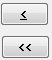).similar(0.96)) type('a') type(Key.TAB + Key.SPACE) type('sikuli test task 1') wait(, 20) type(Key.F4 + Key.TAB) type(Key.ENTER) waitVanish() type(Key.ENTER) type(Key.ENTER) waitVanish(Pattern(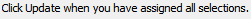).similar(0.94)) assert exists(Pattern(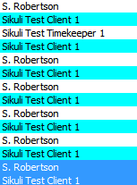).similar(0.94)) wait(2) assert exists(Pattern(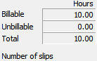).similar(0.89)) type('s', KeyModifier.ALT) wait(, 60) type(Key.TAB + Key.TAB + Key.TAB + Key.TAB + Key.SPACE) waitVanish(Pattern().similar(0.96)) type(Key.ENTER) wait(Pattern(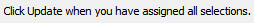).similar(0.95), 30) type(Key.ENTER) waitVanish(Pattern().similar(0.95)) type('w', KeyModifier.CTRL) #slip_list()